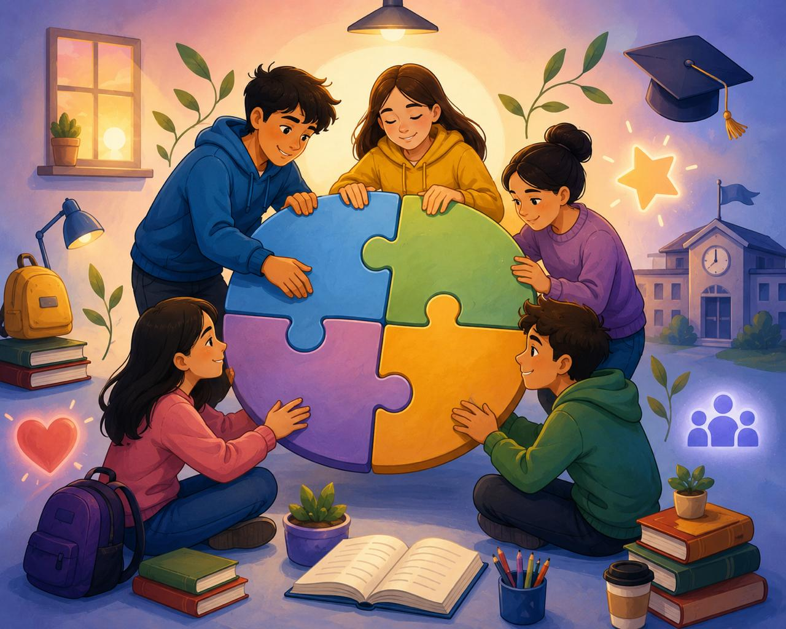

Hubo un momento en mi vida escolar donde todo empezó a salir mal. Me sentía cansado, sin ganas y con la sensación de que no importaba cuánto intentara, no iba a mejorar. Empecé a dejar tareas, a distraerme y poco a poco perdí el control.
No cambiar a tiempo tuvo consecuencias. Mis calificaciones bajaron, mi confianza también y empecé a alejarme de mis metas. Me di cuenta de que el problema no era la escuela, sino cómo estaba enfrentando las cosas.
Un día entendí que si no hacía algo, todo iba a empeorar. No fue fácil, pero decidí empezar con pequeños cambios que después hicieron una gran diferencia.
Estas estrategias fueron clave para mejorar mi situación:
Aprendí que no se trata de ser perfecto, sino constante. La disciplina, aunque a veces cuesta, es lo que realmente hace la diferencia.
Si estás pasando por algo parecido, quiero que sepas que no estás solo. Todos en algún momento sentimos que no podemos, pero sí se puede salir adelante.
No se trata de no caer, sino de levantarse cada vez con más fuerza. Tu historia aún no termina.